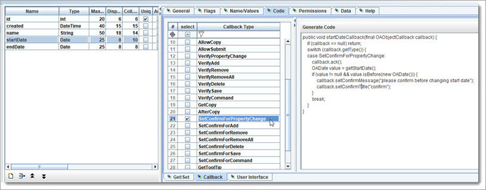

Create Callback
We will use Callback for another user interaction. If the Campaign.startDate is changed, and its previous value is less then today, then we should have the
user confirm the change.

 Discuss & Learn: “Callbacks” are used to allow outside code to
interact with custom code in the Model Objects. This is an important ingredient in the code generation techniques used in OA, to be able to build close to 100% of an
Application. There are always special cases that fall outside of what can be done in a modeling and code generators, and callbacks are needed to solve this.
Discuss & Learn: “Callbacks” are used to allow outside code to
interact with custom code in the Model Objects. This is an important ingredient in the code generation techniques used in OA, to be able to build close to 100% of an
Application. There are always special cases that fall outside of what can be done in a modeling and code generators, and callbacks are needed to solve this.
There are some other techniques, like OOP subclassing and hooking into other servicers.